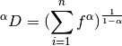
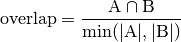

immuneREF feature layers¶
The feature layers of immuneREF (Overview)¶
This section provides an overview over the six immuneREF feature layers:
- Diversity
- Germline gene usage
- Positional amino acid frequency
- Sequential occurrence of gapped k-mers
- Network architecture
- Convergence (Repertoire overlap, Immunosignatures)
- Running the feature layer analysis
Diversity¶
The diversity profiles were calculated as previously described [1]. Briefly, we calculated the Hill-diversity for alphas 0–10 in steps of 0.1 with alpha = 1 being defined as the Shannon entropy. Each entry in the profile varies between ≈0 and 1, where higher values indicate an increasingly uniform frequency distribution.

Germline gene usage¶
The frequency of occurrence of IMGT germline genes [2] in each repertoire was calculated for each repertoire depending on species and immune receptor class (Ig, TCR). The frequency of germline genes (defined by the ImmunoGenetics Database, IMGT) [2] across clones in each repertoire was calculated for each repertoire depending on species and immune receptor class (Ig, TR). The germline gene usage allows insight into deviations from a baseline recombinational likelihood and thereby captures the potential impact of disease, vaccine or other events on the immune state. To determine germline gene usage similarities, germline gene frequencies across clones are extracted for each individual.
Positional amino acid frequency¶
The positional amino acid frequencies were calculated separately for each CDR3 sequence length present in the repertoire. To decrease the chance of bias by small sets of short and long CDR3 sequences, we limit this analysis to a range of most common lengths (i.e., between 8–20 amino acids) [3]. This range can be adapted via the calc_characteristics() parameter aa_range which takes in a vector containing the range of lengths (e.g. aa_range = c(10:22) to consider AA frequenceis of lengths 10-22)
Sequential occurrence of gapped k-mers¶
For a given (nucleotide) k-mer size k and maximal gap length m , optimized to maximize information via parameter search, the gapped-pair-k-mer occurrences were counted for all gap sizes <= m. The counts were normalized by the total number of found patterns across all gap sizes such that short range patterns were weighted higher than large gap sizes. Users are free to introduce a new k-mer dictionary to analyze different k-mer lengths and gap sizes using the function make_kmer_dictionary().
# Constructs a gapped kmer dictionary used to count k-mers
# The arguments determine the k_nt and gap_size_nt determine the pattern length and gap size
dictionary_counts <- make_kmer_dictionary(
k_nt = 3,
gap_size_nt = c(0,1,2,3))
Network architecture¶
immuneREF constructs a similarity network for each repertoire [4] where nodes represent CDR3 sequences connected by Levenshtein Distance LD=1 similarity-edges using the igraph package [5]. The resulting networks were analyzed as previously described with respect to four measures: (i) cumulative degree distribution, (ii) mean hub score (Kleinberg hub centrality score), (iii) fraction of unconnected clusters and nodes and (iv) percent of sequences in the largest connected component.
Convergence (Repertoire overlap, Immunosignatures)¶
To compare repertoire similarity with respect to the presence of immunosignatures, immuneREF provides two options.
The first (and standard) option is to measure the convergence of repertoires by calculating a simple overlap measure according to:

For this, we provide the repertoire_overlap() function which includes the basis option that determines based on which sequence the overlap is calculated.
The options are: “CDR3_aa”,”CDR3_nt”,”VDJ_aa”,”VDJ_nt”,”V_CDR3_J_aa” and “V_CDR3_J_nt”
# Calculate the overlap across all repertoire pairs. Default basis is CDR3_aa
overlap_layer <- repertoire_overlap(list_simulated_repertoires, basis = "CDR3_aa")
The second option integrated in immuneREF is to evaluate the repertoires using pre-trained machine learning models. In this approach, the models are used to predict presence of sequences with given characteristics (public clones, antigen-specificity). For each repertoire, the percentage of positively predicted sequences is then taken as the repertoire immunosignature feature. The base immuneREF package provides an SVM model trained to classify public and private CDR3 sequences (murine Ig) [6] using the KeBABS R-package [7].
Once a larger number of robust pretrained ML models are available future versions of immuneREF will enable their rapid application for immune repertoire diagnostics.
The calc_characteristics already calculates a basic immunosignature layer based on the contained SVM model (predicting similarity with respect to presence of of murine Ig public clones). The associated similarity layer can be calculated using:
immunosignature_layer <- make_cormat(repertoires_analyzed, weights_overall = c(0,0,0,1,0,0))
Additionally, the calc_characterstics() function has an additional parameter models which allows the user to read-in a list of ML models compatible with the kebabs::predict() function for the calculation of the immunosignature feature.
Running the feature layer analysis¶
immuneREF analyzes the similarity between repertoires across six major features. Before the similarity calculation, each repertoire is analyzed with respect to all of these features. This analysis can be performed all in one or in separate steps per single layer (especially useful for large datasets). Below is an example of the analysis across all features:
# Feature calculation
# Extract repertoire sizes and names
repertoire_lengths <- sapply(1:length(tutorial_repertoires),function(x) nrow(tutorial_repertoires[[x]]))
repertoire_names <- sapply(1:length(tutorial_repertoires),function(x) as.character(unique(tutorial_repertoires[[x]]$name_repertoire)))
# Calculate all features for each repertoire
repertoires_analyzed <- list()
for(i in 1:length(tutorial_repertoires)){
repertoires_analyzed[[repertoire_names[i]]] <- calc_characteristics(
repertoire_df = tutorial_repertoires[[i]],
species = strsplit(repertoire_names[i],"_")[[1]][2],
receptor = strsplit(repertoire_names[i],"_")[[1]][3],
chain = strsplit(repertoire_names[i],"_")[[1]][4],
identifier_rep = repertoire_names[i])
}
save(repertoires_analyzed,file = "repertoires_analyzed")
References¶
| [1] | A bioinformatic framework for immune repertoire diversity profiling enables detection of immunological status, Greiff et al., Genome Medicine, 2015, https://genomemedicine.biomedcentral.com/articles/10.1186/s13073-015-0169-8 |
| [2] | (1, 2) IMGT/JunctionAnalysis: IMGT Standardized Analysis of the V-J and V-D-J Junctions of the Rearranged Immunoglobulins (IG) and T Cell Receptors (TR), Giudicelli et al., Cold Spring Harbor Protocols, 2011, http://cshprotocols.cshlp.org/content/2011/6/pdb.prot5634 |
| [3] | Systems Analysis Reveals High Genetic and Antigen-Driven Predetermination of Antibody Repertoires throughout B Cell Development, Greiff et al., Cell Reports, 19(7), 2017, https://www.sciencedirect.com/science/article/pii/S221112471730565X |
| [4] | Large-scale network analysis reveals the sequence space architecture of antibody repertoires, Miho et al., Nature Communications, 2019, https://www.nature.com/articles/s41467-019-09278-8 |
| [5] | The igraph software package for complex network research, Csardi G, Nepusz T, InterJournal, Complex Systems 1695, 2006, http://igraph.org |
| [6] | Learning the High-Dimensional Immunogenomic Features That Predict Public and Private Antibody Repertoires, Greiff et al., Journal of Immunology, 99(8), 2017, http://www.jimmunol.org/content/199/8/2985 |
| [7] | KeBABS: an R package for kernel-based analysis of biological sequences. Palme et al., Bioinformatics, 31, 2015, https://academic.oup.com/bioinformatics/article-lookup/doi/10.1093/bioinformatics/btv176 |